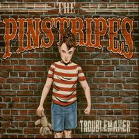

the Pinstripes - Troublemaker (Album, 2019)
01 - Troublemaker (2:40)
02 - Betty Blue (2:41)
03 - Nice Boys (3:07)
04 - Die Die My Darling (3:14)
05 - Bad Reputation (3:16)
06 - Hoochie Coochie Man (3:26)
07 - Loving Hurts (2:40)
08 - Spell On Me (3:06)
09 - When I'm Gone (3:01)
10 - Wicked Game (3:59)
11 - Four-Wheeled-Coffin (2:43)
12 - Wasted Again (3:47)
13 - Narben (3:15)
14 - Chainsaw (3:48)
15 - Poison Heart (3:22)
© TCY-Records :: [TCY034]
Notes
Ludwigsburg, Germany.
Spike - Guitar, Lead vocals
Hagen - Drums, Backing vocals
Tom - Doublebass, Backing vocals
track 03 (Nice Boys), track 09 (When I'm Gone), track 10 (Wicked Game) are extra songs on its album digital release.
reference information: Discogs®
Review
075/366 (Project 366)
They call it "Kick-ass Rockabilly". Well, their sound is definitely kicking something. I like some songs too much. Good to listen to their tracks much more time for proper review.